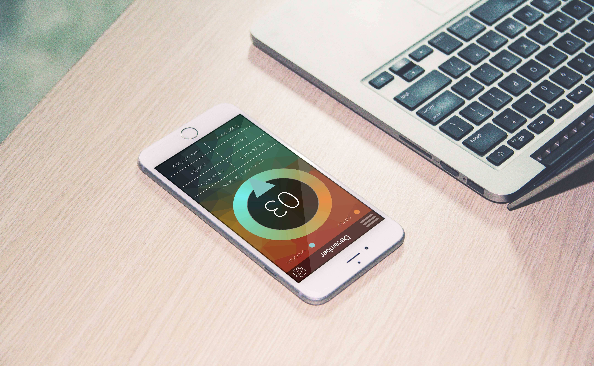

I started studying design in the 7th grade when I joined the yearbook staff at my junior high, as such the majority of my design experience has been on the computer. I love learning about the computer and how I could use different software to help me manipulate digital media. I feel like the possibilities with online and digital media is endless. I love seeing what others create using the computer, their are countless places to go online to find information and inspiration on how to create and design digitally.
Showcased here is a design I created for a fertility calculator for one of my college classes. This application was designed to be discreate as to what it's purpose is. No girl wants to broadcast that she is keeping track of her ovulation cycle, most people would prefer that such things remain private! Most fertility calculators are covered in butterflies and flowers, they are childish, this calculator was designed for women, why shouldn't it look age appropriate.
